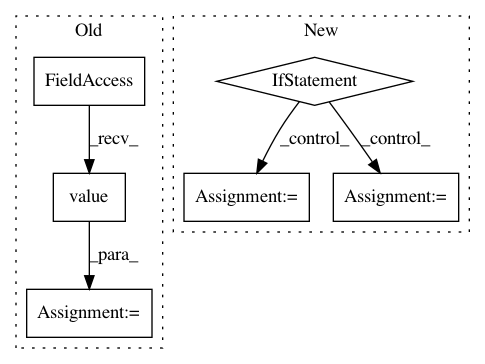

ee950b503eeed5aca3747a4bcf2a40f624b743a0,tensorforce/core/optimizers/synchronization.py,Synchronization,tf_step,#Synchronization#Any#Any#Any#,58
Before Change
deltas.append(delta)
return deltas
sync_frequency = self.sync_frequency.value()
skip_sync = (time - self.last_sync < sync_frequency)
return self.cond(pred=skip_sync, true_fn=no_sync, false_fn=apply_sync)
After Change
List of delta tensors corresponding to the updates for each optimized variable.
assert all(
util.shape(source) == util.shape(target)
for source, target in zip(source_variables, variables)
)
timestep = Module.retrieve_tensor(name="timestep")
def apply_sync():
update_weight = self.update_weight.value()
deltas = list()
for source_variable, target_variable in zip(source_variables, variables):
delta = update_weight * (source_variable - target_variable)
deltas.append(delta)
applied = self.apply_step(variables=variables, deltas=deltas)
last_sync_updated = self.last_sync.assign(value=timestep)
with tf.control_dependencies(control_inputs=(applied, last_sync_updated)):
// Trivial operation to enforce control dependency
return [util.identity_operation(x=delta) for delta in deltas]
def no_sync():
deltas = list()
for variable in variables:
delta = tf.zeros(shape=util.shape(variable))
deltas.append(delta)
return deltas
sync_frequency = self.sync_frequency.value()
skip_sync = (timestep - self.last_sync < sync_frequency)
return self.cond(pred=skip_sync, true_fn=no_sync, false_fn=apply_sync)
In pattern: SUPERPATTERN
Frequency: 3
Non-data size: 6
Instances
Project Name: reinforceio/tensorforce
Commit Name: ee950b503eeed5aca3747a4bcf2a40f624b743a0
Time: 2019-01-21
Author: alexkuhnle@t-online.de
File Name: tensorforce/core/optimizers/synchronization.py
Class Name: Synchronization
Method Name: tf_step
Project Name: reinforceio/tensorforce
Commit Name: ee950b503eeed5aca3747a4bcf2a40f624b743a0
Time: 2019-01-21
Author: alexkuhnle@t-online.de
File Name: tensorforce/core/optimizers/multi_step.py
Class Name: MultiStep
Method Name: tf_step
Project Name: rwth-i6/returnn-experiments
Commit Name: 68595c0b6ad4999b9fcfc9bbbc31f589f58f6e78
Time: 2021-03-24
Author: albert.zeyer@rwth-aachen.de
File Name: 2021-transducer-thesis-merboldt/librispeech/rnnt-fs.bpe1k.readout.zoneout.lm-embed256.lr1e_3.no-curric.bs12k.mgpu.retrain1.common.config.py
Class Name:
Method Name: